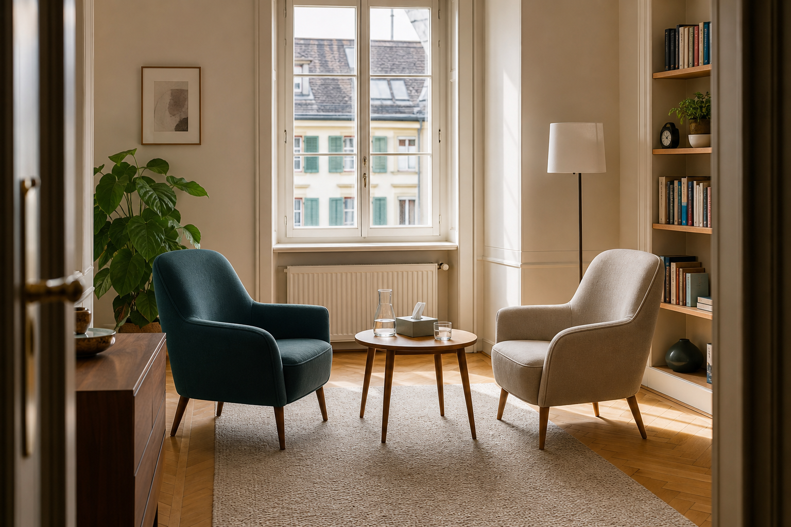

Psikiyatrik değerlendirme
İlk görüşmeler, tanısal değerlendirme ve sonraki tedavi adımlarının birlikte önceliklendirilmesi.

Zürih 8001 · Obere Zäune 14
Sakin ve merkezi bir konumda psikiyatrik değerlendirme, psikoterapi ve özenli tedavi planlaması için hekim muayenehanesi.
Muayenehane
Odak noktası, ruhsal zorlanmaların dikkatli biçimde değerlendirilmesi, saygılı bir görüşme süreci ve kişinin durumuna uygun bir tedavi planıdır.
Hizmetler
İlk görüşmeler, tanısal değerlendirme ve sonraki tedavi adımlarının birlikte önceliklendirilmesi.
Zorlanmalar, günlük yaşam, ilişkiler ve kişisel dengeyi güçlendirme üzerine görüşmeler.
Dikkatli takip, ilaç tedavisine ilişkin sorular ve gerektiğinde diğer tedavi birimleriyle koordinasyon.
Muayenehane sahibi
Mustafa Çiçek, İsviçre'deki psikiyatri kurumlarında edindiği klinik deneyimi elektrokonvülsif terapi alanındaki bilimsel odağıyla birleştirir.
Istanbul University, Medicine
Araştırma profilindeki yayınlar
Araştırma profilindeki atıflar
Deneyim
Araştırma
Bilimsel odak, elektrokonvülsif terapi, bilişsel yan etkiler ve klinik seyir parametreleri üzerine çalışmaları içerir.
Stimulus parameters, electrode placement and cognitive side effects of ECT in schizophrenia and schizoaffective disorder
Brain Stimulation / The Journal of ECT · 2019-2020Prolactin changes during electroconvulsive therapy: A systematic review and meta-analysis
Journal of Psychiatric Research · 2020Electrode placement in electroconvulsive therapy - bilateral is still the gold standard for some patients
Psychological Medicine · 2017Spontaneous seizure from remifentanil induction during electroconvulsive therapy
The Journal of ECT · 2017İletişim & konum
Randevular anlaşmaya göre düzenlenir
Rotayı aç